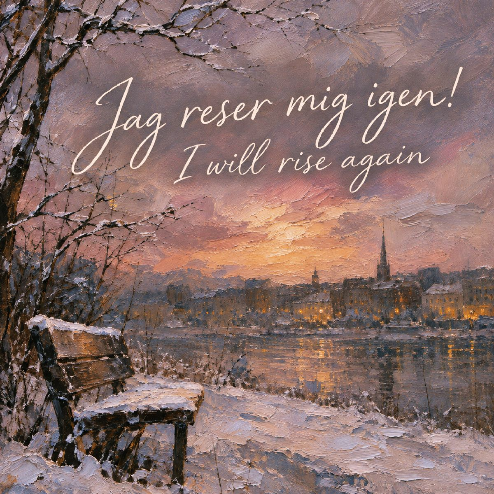

Jag reser mig igen!

Publicerad 17 november 2026
Text - Caroline Nilsson
Engelsk version · I will rise again
Jag reser mig igen!
Sa hon.
Jag har legat på botten.
Av bottens alla sorger.
Det är ingen som sagt att livet ska va enkelt.
Men det var heller ingen som sa hur svår sorgen kunde va.
Jag reser mig igen!
Sa hon.
Jag har legat på botten.
Av bottens alla sorger.
Jag tar mina minnen med mig.
När jag vandrar där i stan.
Snön som ligger tjock på marken.
Den ligger som ett skimmer i mitt hår.
Jag reser mig igen!
Sa hon.
Jag har legat på botten.
Av bottens alla sorger.
Ibland behöver jag bara ligga där
ett tag.
Se sorgens alla ansikten
snurra runt.
Omkring mig.
Men ni behöver inte vara rädda.
För….
Jag reser mig igen!
Sa hon.
Jag har legat på botten.
Av bottens alla sorger.
Imorgon ler jag igen.
Åt allt det vi gjort.
Då ser jag tillbaka.
På vår vänskap som var.
Jag reser mig igen!
Sa hon.
Jag har legat på botten.
Av bottens alla sorger.